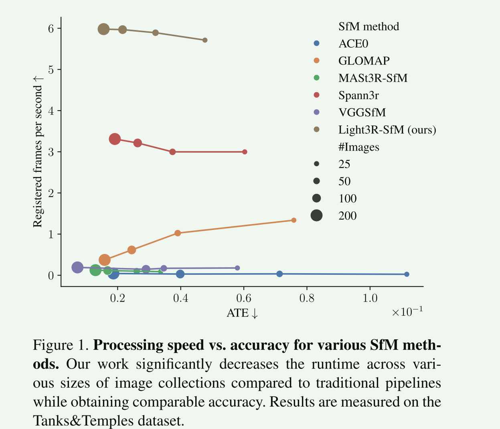
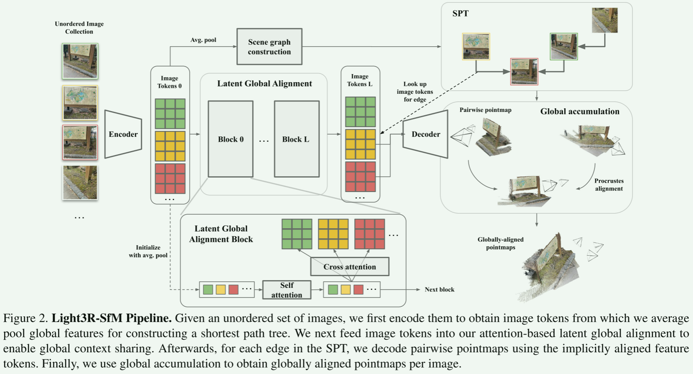
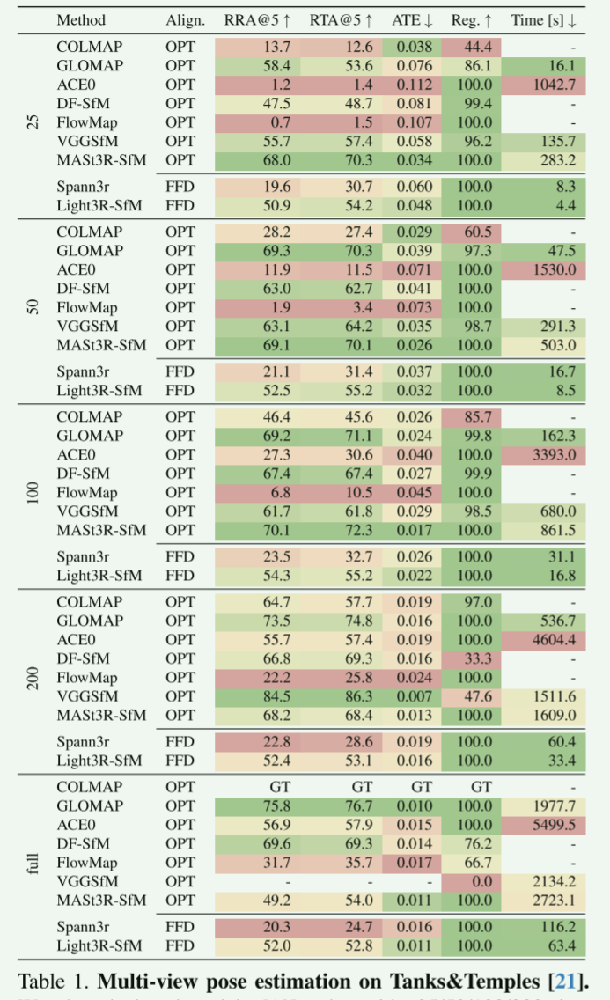
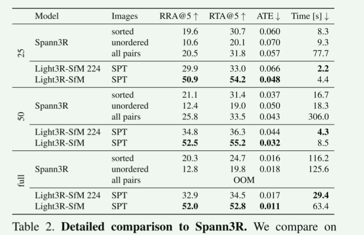

输入相邻视角或稀疏视角 image pair，编码图像特征（局部、纹理）并融合全局几何上下文；
通过网络估计 pose 替代五点法+RANSAC；
再结合多视角约束生成稀疏点云，同时引入轻量化BA，保证精度与一致性。
可学习的相关性矩阵能在弱纹理场景找到更可靠的匹配点。
pipeline

images - encoder - image & global token - latent global alignment & attention - SPT 构图 - SPT 逐边 decode - pointmap + confidence map - 带权 Procrustes 对齐 - 全局对齐的 pointmap + pose。
方法
（1）Encoder
input：无序图像组 ({Ii}i = 1N)。 encoder：每张图得到密集 token Fi(0)(∈ℝ⌊H/p⌋×⌊W/p⌋ × d)。再对所有图都全局平均池化 → 全局 token gi(0)(∈ℝd)，后期场景图构建并作为潜空间对齐的输入。
（2）Latent Global Alignment
解码前让特征在潜空间完成全局信息共享与对齐，取消传统全局优化（BA等）。
方法：堆 L 个“潜空间全局对齐块”。
全局 token {gi(l)}i = 1N 经 Self-Attention 得 gi(l+1)
图像 token 每张图把 Fi(l) 和 gj(l+1) 通过 Cross-Attention 得 Fi(l+1)
残差融合：Fi = Fi(0) + Fi(L)
复杂度优化：把全图稠密 token 间的两两注意力分解为全局 token 间 + 每图稠密 token 对全局 token 的注意力。复杂度从 𝒪((NT)2) 降为 𝒪(N2+NT)（T是每张图片的token数量），这才让这个方法能适合更大的输入。
（3）构造场景图（利用 SPT ）
全连接把所有 image pair 解码太大了，选择 N-1 条边覆盖到全部图像就可以 ，用最短路径树（SPT）构造不深的连接（不用 MST：容易形成深树，累积配准漂移更大；SPT 更扁误差更小）：
对 Fi 平均池化得到 F̄i，计算余弦相似度矩阵 Sij。
用相似度作边权，构造SPT：选一个“全局相似度最好的根”（最小总代价），再用 SPT 连接所有图像，只保留 (N-1) 条边。
（4）Decoder
对 SPT 边 (i,j)，把上一步“已全局对齐的” token (Fi,Fj) 喂给 Stereo Decoder，输出 pointmap (Xi, i,Xj, i) 和对应的 confidence map。
这步的稳定性得益于 decoder 输入的特征经过了潜空间全局对齐。
（5）Global Accumulation
把局部点图逐步拼到全局，沿 SPT BFS：
利用带权的 Procrustes 进行对齐，得到变换矩阵 Pk ，逆变换即可把当前点图变换到全局坐标，最后再把置信度一更新。
走遍 SPT 就可以得到每一张输入的全局对齐点图和相机位姿。
Procrustes 是 闭式解、线性随N增长，比全局 BA 之类的迭代优化计算代价小很多。
结果

